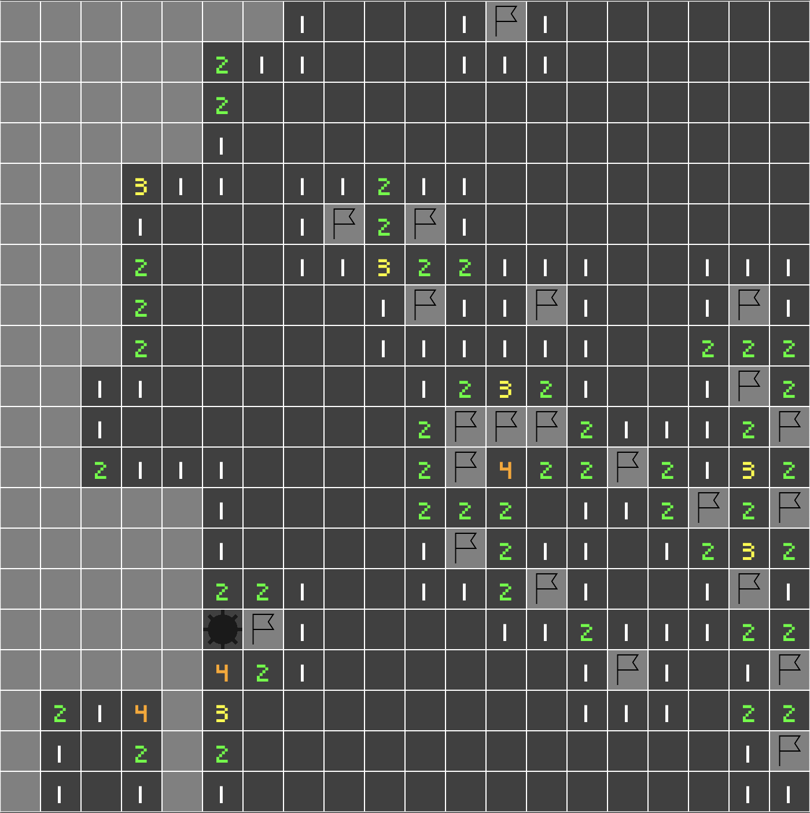

Marking tiles
Our minesweeper plugin is almost done, we still miss a very important feature: Marking tiles. Also, you may notice that the app is quite slow, especially with large tile maps. Let's fix that first.
Optimizations
Add the following optimization levels in our app's Cargo.toml:
# Enable optimizations for dependencies (incl. Bevy), but not for our code:
[profile.dev.package."*"]
opt-level = 3
# Maybe also enable only a small amount of optimization for our code:
[profile.dev]
opt-level = 1
This won't enable as many optimizations as a release build, but you should notice significant improvements
Events
To complete the gameplay we need to provide three additional events in our board_plugin/src/events.rs.
Board completed event
This event will be sent at the board completion, allowing apps using our plugin to detect victory and maybe trigger some elements (victory screen, score, etc)
#![allow(unused)] fn main() { #[derive(Debug, Copy, Clone)] pub struct BoardCompletedEvent; }
Bomb explosion event
This event will be sent every time the player uncovers a bomb, allowing apps using our plugin to detect it. Our plugin won't interrupt the game itself, by doing an event instead we allow apps to maybe trigger loss at 3 bombs or immediately. This method is much more modular than adding a configuration.
#![allow(unused)] fn main() { #[derive(Debug, Copy, Clone)] pub struct BombExplosionEvent; }
Tile mark event
This event is the equivalent of TileTriggerEvent but for the right click.
#![allow(unused)] fn main() { #[derive(Debug, Copy, Clone)] pub struct TileMarkEvent(pub Coordinates); }
Resources
Let's edit our Board resource to handle tile marking (flags):
#![allow(unused)] fn main() { // board.rs use bevy::log; #[derive(Debug)] pub struct Board { // .. pub marked_tiles: Vec<Coordinates>, } impl Board { // .. /// Removes the `coords` from `marked_tiles` fn unmark_tile(&mut self, coords: &Coordinates) -> Option<Coordinates> { let pos = match self.marked_tiles.iter().position(|a| a == coords) { None => { log::error!("Failed to unmark tile at {}", coords); return None; } Some(p) => p, }; Some(self.marked_tiles.remove(pos)) } /// Is the board complete pub fn is_completed(&self) -> bool { self.tile_map.bomb_count() as usize == self.covered_tiles.len() } } }
We add:
- a new field storing the various marked coordinates
- a public method checking the board completion.
- a private method to remove coordinates from the new field
Let's edit the tile_to_uncovermethod and check for marked tiles:
// board.rs
pub fn tile_to_uncover(&self, coords: &Coordinates) -> Option<&Entity> {
+ if self.marked_tiles.contains(coords) {
+ None
+ } else {
self.covered_tiles.get(coords)
+ }
}
Instead of directly returning the covered tile entity, we check if the tile is marked. This will prevent uncovering marked tiles by clicking on it.
Let's change the try_uncover_tile method as well to remove the marked coordinates on uncovering.
// board.rs
pub fn try_uncover_tile(&mut self, coords: &Coordinates) -> Option<Entity> {
+ if self.marked_tiles.contains(coords) {
+ self.unmark_tile(coords)?;
+ }
self.covered_tiles.remove(coords)
}
We can now create the try_toggle_mark method:
#![allow(unused)] fn main() { // board.rs /// We try to mark or unmark a tile, returning the entity and if the tile is marked pub fn try_toggle_mark(&mut self, coords: &Coordinates) -> Option<(Entity, bool)> { let entity = *self.covered_tiles.get(coords)?; let mark = if self.marked_tiles.contains(coords) { self.unmark_tile(coords)?; false } else { self.marked_tiles.push(*coords); true }; Some((entity, mark)) } }
Systems
Uncover
Let's edit our uncovering system to check for board completion.
We also need to send our new BombExplosionEvent.
// uncover.rs
+ use crate::{BoardCompletedEvent, BombExplosionEvent};
pub fn uncover_tiles(
// ..
+ mut board_completed_event_wr: EventWriter<BoardCompletedEvent>,
+ mut bomb_explosion_event_wr: EventWriter<BombExplosionEvent>,
) {
// match board.try_uncover_tile(coords) {}
// ..
+ if board.is_completed() {
+ log::info!("Board completed");
+ board_completed_event_wr.send(BoardCompletedEvent);
+ }
if bomb.is_some() {
log::info!("Boom !");
- // TODO: generate an event
+ bomb_explosion_event_wr.send(BombExplosionEvent);
}
//..
}
Input
Let's edit our input_handling system and send our new event for a right click:
// input.rs
+ use crate::TileMarkEvent;
pub fn input_handling(
// ..
+ mut tile_mark_ewr: EventWriter<TileMarkEvent>,
) {
// ..
- // TODO: generate an event
+ tile_mark_ewr.send(TileMarkEvent(coordinates));
// ..
}
Mark
Let's create a mark module in our plugin systems with a mark_tiles system:
#![allow(unused)] fn main() { // systems/mod.rs pub mod mark; }
#![allow(unused)] fn main() { // mark.rs se crate::{Board, BoardAssets, TileMarkEvent}; use bevy::log; use bevy::prelude::*; pub fn mark_tiles( mut commands: Commands, mut board: ResMut<Board>, board_assets: Res<BoardAssets>, mut tile_mark_event_rdr: EventReader<TileMarkEvent>, query: Query<&Children>, ) { for event in tile_mark_event_rdr.iter() { if let Some((entity, mark)) = board.try_toggle_mark(&event.0) { if mark { commands.entity(entity).with_children(|parent| { parent .spawn_bundle(SpriteBundle { texture: board_assets.flag_material.texture.clone(), sprite: Sprite { custom_size: Some(Vec2::splat(board.tile_size)), color: board_assets.flag_material.color, ..Default::default() }, transform: Transform::from_xyz(0., 0., 1.), ..Default::default() }) .insert(Name::new("Flag")); }); } else { let children = match query.get(entity) { Ok(c) => c, Err(e) => { log::error!("Failed to retrieve flag entity components: {}", e); continue; } }; for child in children.iter() { commands.entity(*child).despawn_recursive(); } } } } } }
We have familiar arguments, and a new Query on Children entities which we will use for children of tile cover entities (flags).
Note: This query could be optimized with a new
TileCovercomponent, therefore avoiding querying every entity with children
The function iterates through our TileMarkEvent reader and will attempt to toggle marks on the Board resource.
If the tile is marked, we spawn a flag sprite, using the BoardAssets, otherwise we despawn all tile cover children.
We could store entity references or use a custom Flag component to avoid this hard despawn operation, but we won't add any other children to the tile cover entities.
Plugin
Let's register our new events and systems:
// lib.rs
impl<T: StateData> Plugin for BoardPlugin<T> {
fn build(&self, app: &mut AppBuilder) {
// ..
// We handle uncovering even if the state is inactive
.add_system_set(
SystemSet::on_in_stack_update(self.running_state.clone())
.with_system(systems::uncover::uncover_tiles)
+ .with_system(systems::mark::mark_tiles), // We add our new mark system
)
.add_system_set(
SystemSet::on_exit(self.running_state.clone()).with_system(Self::cleanup_board),
)
.add_event::<TileTriggerEvent>()
+ .add_event::<TileMarkEvent>()
+ .add_event::<BombExplosionEvent>()
+ .add_event::<BoardCompletedEvent>();
}
}
impl<T> Board<T> {
fn setup_board(
// ..
) {
// ..
commands.insert_resource(Board {
// ..
+ marked_tiles: Vec::new(),
// ..
})
}
}
That's it ! We have a complete Minesweeper plugin !

Author: Félix de Maneville Follow me on Twitter